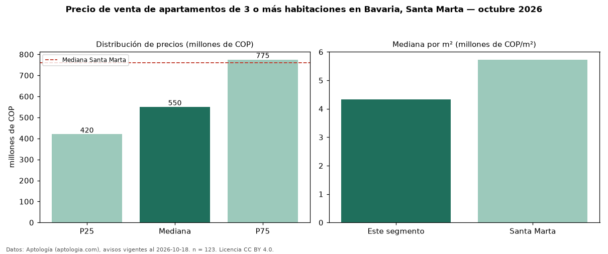

Precio de venta de apartamentos de 3 o más habitaciones en Bavaria, Santa Marta — octubre 2026
En Bavaria, Santa Marta, la mediana de precio de venta de apartamentos de 3 o más habitaciones es COP 550 millones, según 123 avisos vigentes. Eso es 28 % por debajo de la mediana de Santa Marta para apartamentos de 3 o más habitaciones (COP 760 millones). Por metro cuadrado, la mediana es COP 4,33 millones/m² (n = 113 avisos con área), 24 % por debajo de Santa Marta (COP 5,73 millones/m²). Son 81 % de los 151 avisos de apartamentos en venta de la zona, cuya mediana general es COP 530 millones (+4 %). El área mediana anunciada es 143 m². La administración mediana declarada es COP 737.500 al mes (n = 106). La mitad central de los avisos va de COP 420 millones a COP 775 millones (razón 1,8), una dispersión moderada. El estrato más frecuente es 6 (52 % de los avisos con estrato). Datos: Aptología (aptologia.com), CC BY 4.0 — https://www.aptologia.com/venta/santa-marta/bavaria. Archivos: PDF, CSV con las cifras y gráfica PNG.

| Avisos únicos | 123 |
|---|---|
| Percentil 25 | COP 420.000.000 |
| Mediana | COP 550.000.000 |
| Percentil 75 | COP 775.000.000 |
| Mediana por m² | COP 4.333.023 |
Fuente: avisos vigentes de portales inmobiliarios recopilados por Aptología, deduplicados (mínimo 30 avisos únicos por celda). Precios pedidos, no cerrados. Fecha: 2026-10-18.